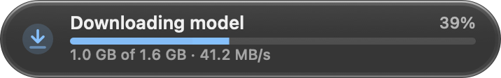

OpenAI Whisper on MLX, from mlx-community
Whisper Large V3 Turbo
Automatic, or pinned to one language. Uses your vocabulary.
- Turbo FP16Full-precision weights1.61 GB
- Turbo Q44-bit quantized464 MB
Open-source dictation for macOS
Free, fully local dictation for Apple Silicon Macs. Tap a hotkey, talk, and the text appears wherever you are typing.
Triple-tap Control, or pick your own modifier.
Transcribed on your Mac. Enter finishes, Esc discards.
Pasted where you were typing, or kept on the clipboard.
Local first
Audio and text stay local. No cloud.
One model download from Hugging Face, then offline.
The mic opens only while you record.
Whisper reads audio from memory, not from disk.
Pinned revisions, checked by size and SHA-256.
MIT licensed. Every line is public.
Six speech models from three families. Download, switch, remove.
OpenAI Whisper on MLX, from mlx-community
Automatic, or pinned to one language. Uses your vocabulary.
NVIDIA and Moondream, Core ML by Fluid Inference
Detects the language on its own.
NVIDIA, Core ML conversion by Fluid Inference
NVIDIA's multilingual streaming recognizer.
No model ships in the app. Each download is verified before use.

A native Settings window and one plain-text file. Edits apply in seconds.
One modifier, two to four taps. Any other key cancels it.
Opt-in. Confirmed words in full ink, the live guess dimmed.
Whisper leans toward the spellings you list.
Records with the built-in mic, so headphone audio stays untouched.
Optionally pauses Spotify or Apple Music while you record.
Soon. There is no public build yet. Follow the repository on GitHub to catch the first release.
An Apple Silicon Mac with macOS 15 or later, plus 220 MB to 1.61 GB of disk space per model.
Yes. The only network access is a model download you start yourself.
German and English. Whisper and Nemotron can be pinned to either one, Parakeet detects the language itself.
Microphone to hear you, Input Monitoring for the hotkey, Accessibility to place the text.
Nothing is typed. The transcript stays on your clipboard.
No. It opens only while you record, unless you turn on standby for instant starts.
Turn off Launch at Login, quit, and move the app to the Trash.
Until then, read the source, open an issue, or follow the repository on GitHub to catch the release.